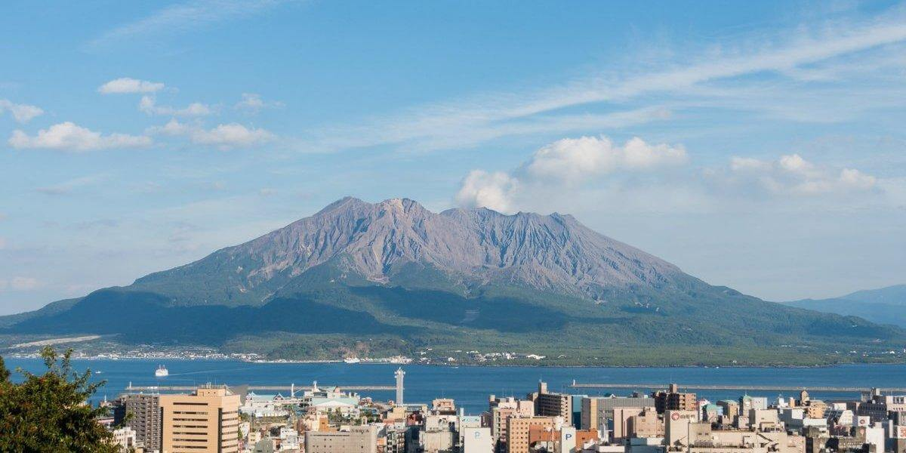
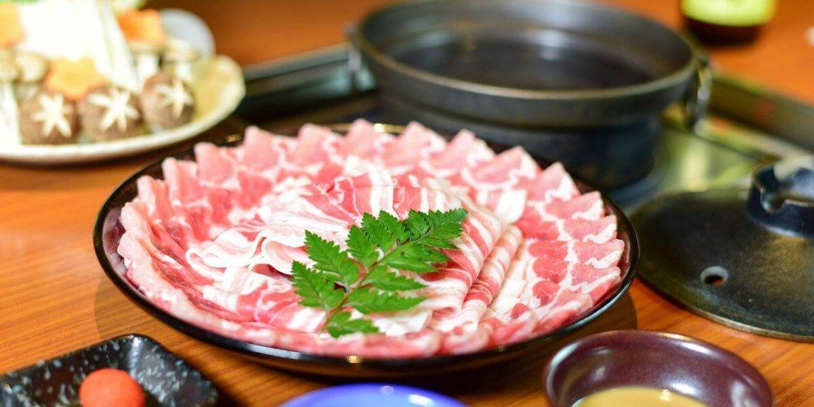
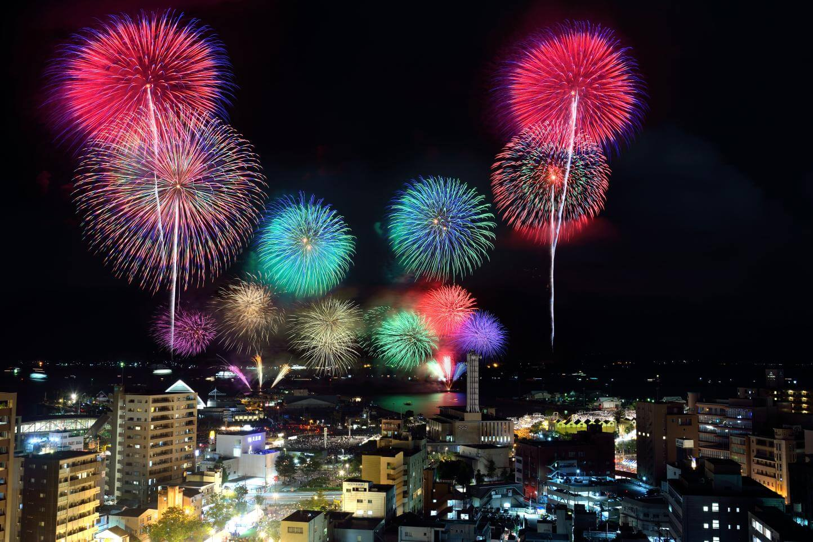
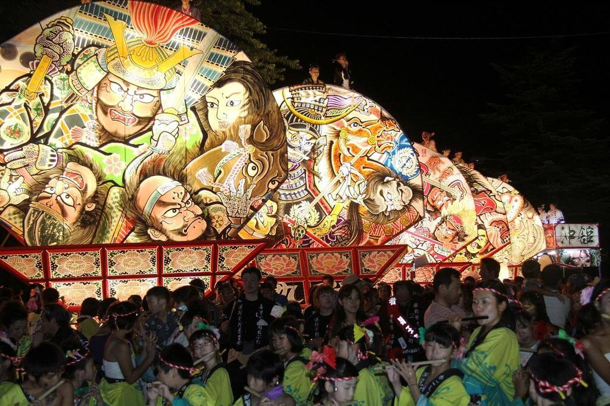
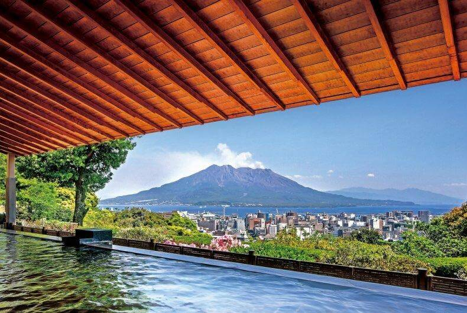

Discover the iconic symbol of Kagoshima, Sakura-jima, and enjoy
its various expressions depending on the season, time, and viewing
location. As a globally renowned active volcano that continues to
erupt, Sakura-jima is an essential part of Kagoshima tourism.

Indulge in the rich flavors of Kagoshima's renowned brand of
"Kagoshima Kurobuta (black pork), Kagoshima Wagyu (black cattle),
and Kagoshima Jidori (local chicken)," which are raised in the
abundant natural surroundings. Whether it's the succulent Kurobuta
shabu-shabu, savoring the premium marbled texture of Wagyu steak,
or enjoying the fresh and tender chicken sashimi, each offers an
unparalleled deliciousness. Don't forget to explore the history
behind each of these specialties and check out recommended local
establishments!

A summer tradition in Kagoshima that began with the Millennium, it
is Kyushu's largest fireworks festival held against the backdrop
of the world-renowned natural landscapes of Sakura-jima, one of
the world's most active volcanoes, and the tranquil waters of the
Kinsei Bay.

Experience the grand summer event in Chiran, Minamikyushu City!
With a vibrant shopping street adjacent to the samurai residence
gardens, the highlight is the magnificent, fan-shaped Nebuta float
measuring 5 meters in height and 4 meters in width, adorned with
bold warrior paintings. Accompanied by lively festival music and
dance troupes, they illuminate the nights of Chiran with a vibrant
summer atmosphere.

From hot springs nestled near mountains, seas, and rivers that
display various expressions depending on the season and time, to
baths overlooking Sakura-jima, often referred to as the symbol of
Kagoshima.